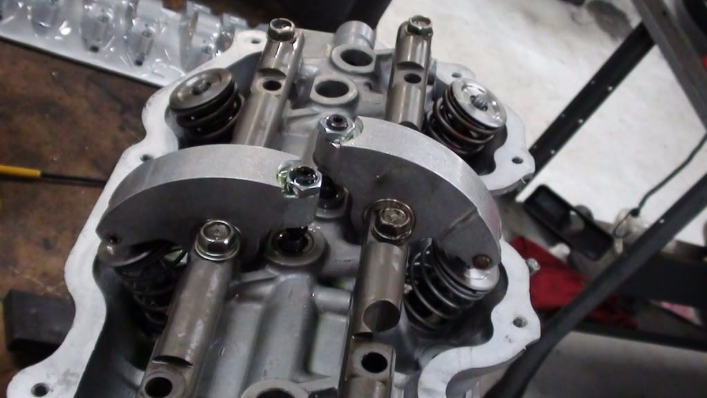
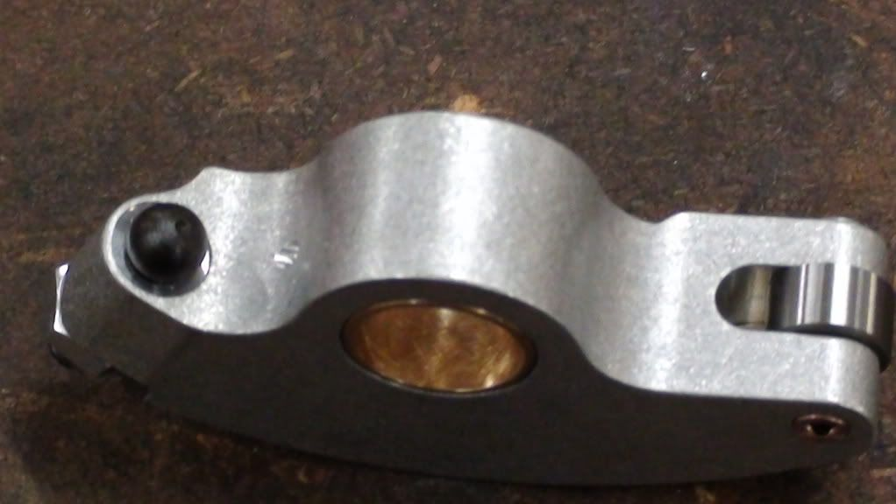
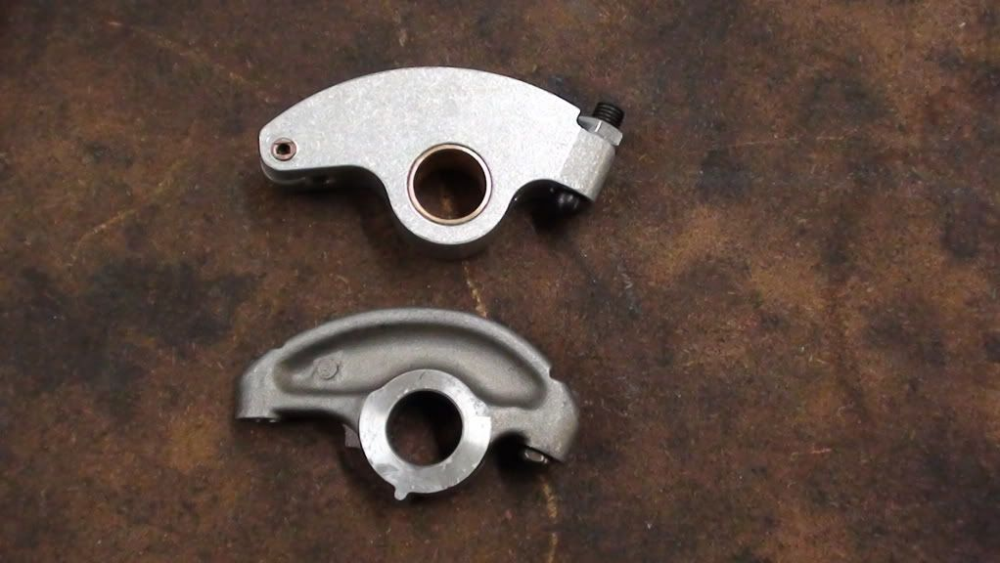
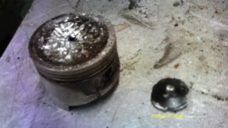

-
Re: High lift, solid flat tappet, roller rocker conversion k
Update.. Rockers are being machined now. Should ship to me next Monday. -
Re: High lift, solid flat tappet, roller rocker conversion k
Very cool awaiting more info.DD:
86 Black Turbo 5spd
The Fallen:
84 red n/a auto Slicktop, 86 Black 2+2 n/a 5spd
Parting Currently:
86 White Turbo 5spd, 88 n/a 5spd, 84 AE, 88 Shiro #64
Garage Sale -
Re: High lift, solid flat tappet, roller rocker conversion k
Could you use just the roller tip rockers while keeping the lifters hydraulically driven? (I know this defeats the purpose of this upgrade package, but I'm just curious) Also, will these keep the same rocker ratio, and would there be any advantage to adjusting the ratio like American engines?
-
Re: High lift, solid flat tappet, roller rocker conversion k
Yes you can use on hydraulic setup. This would allow for larger lift hyd. cam packages as well. Just screw the adjuster down to preload the lifter. Added benefit of roller tip is less guide wear. Talked to manufacturer today and they will be using a swivel foot on the adjuster, like the ones from JPC in AU. Should be in hand by next thursday or friday. -
Re: High lift, solid flat tappet, roller rocker conversion k
Finally done. Lost the swivel foot on the adjuster, ended up with a ball. Works very well though, geometry is spot on. Could handle longer valves and more lift, probably as high as .700". Price came in at $500 for the rockers, which puts the whole kit at around $720. Will work out final pricing later, could go lower if we arrange a group buy. Here are some pics o the rockers.


 -
Re: High lift, solid flat tappet, roller rocker conversion k
SexyOriginally posted by adamvann3 -
Re: High lift, solid flat tappet, roller rocker conversion k
Pretty damn nice sir, kudos to you.Hmmm, Whats next?
Full Size Bronco, smashing shit.
84ZXT -
Re: High lift, solid flat tappet, roller rocker conversion k
OH NOES! someone is making the VG into a modern engine?! -
Re: High lift, solid flat tappet, roller rocker conversion k
Why no roller/needle bearing center?"Its the s12's sexy over weight step daughter, the z31" -
Re: High lift, solid flat tappet, roller rocker conversion k
It can be done, i'll ask how much more next time i talk to the manufacturer. I'm just chasing more lift. So didnt want to spend the money on something with such a small benefit. If I had spring pressures that were double where they are now it would make a little more sense. However i will be asking for the change back to the swivel foot adjuster. And possibly make them a little lighter, like the JPC rockers. -
Re: High lift, solid flat tappet, roller rocker conversion k
Wicked awesome dude. This will even just make engine operation in general smoother! -
Re: High lift, solid flat tappet, roller rocker conversion k
Makes me want to hold on to my isky mega-cams and have my spare heads ported and polished, to be honest. -
Re: High lift, solid flat tappet, roller rocker conversion k
no full roller, no care
but nice job. they look great.
only thing is, they wouldn't work with the roller lifters I has.
might make sense to purchase a set and modify them for my application.
can the brass/bronze bush be pushed out safely? -
Re: High lift, solid flat tappet, roller rocker conversion k
you can run bushed rockers with roller lifters. but to go roller fulcrum it requires more expensive parts and 2 styles of shafts which you end up with 2 part numbers. The problem with roller lifters is you need blank cam cores for new lobes. can't fit roller lobe on flat regrind, unless you weld them up. -
Re: High lift, solid flat tappet, roller rocker conversion k
I know. We've been looking into suppliers for the cam cores. JWT cam cores are unground upon delivery, but they still have a flat tappet profile that will not work even when ground for roller lifter bodies. There are two other suppliers- but we haven't really proceeded with anything yet. Other work in the pipeline.a22770 wrote: you can run bushed rockers with roller lifters. but to go roller fulcrum it requires more expensive parts and 2 styles of shafts which you end up with 2 part numbers. The problem with roller lifters is you need blank cam cores for new lobes. can't fit roller lobe on flat regrind, unless you weld them up.
As for the 2 shafts per rocker, that's also already solved :-)

Copyright © 2006–. All rights reserved. Privacy Policy